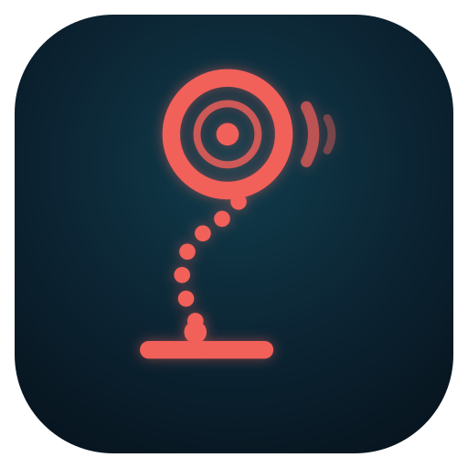

Bar path · side view
Coloured by bar speed. The sideways scale is stretched to show the loop. Drag across it to scrub.
Bar speed0

Weightlifting analysis from one phone
Scrub to the set-up, bar on the floor, then tap the middle of the plate nearest the camera.
Analysing…
Coloured by bar speed. The sideways scale is stretched to show the loop. Drag across it to scrub.
Shaded by stage. Drag across it to scrub.
Starting thresholds, meant to be tuned with your coach.
Body tracking downloads a 6–9 MB model the first time. Everything runs on this device; nothing is uploaded.